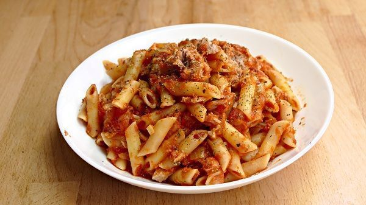

Lentejas

Macarrones con atun y tomate
Ingredientes
- Macarrones
- Salsa de tomate frita
- Atun
- Cebolla
- Ajo
- Aceite de oliva
Pasos de receta
- Poner agua a hervir con sal y aceite, una vez hierve hechar los macarrones
- Picar cebolla y ajos
- poner a sofreir cebolla y ajos
- Una vez se pone la cebolla dorada hechar el atun
- Hechar salsa de tomate, opcional condimentar con oregano, pimienta y sal
- Una vez hecha la salsa y los macarrones mezclar
- Emplatar y disfrutar
Homepage